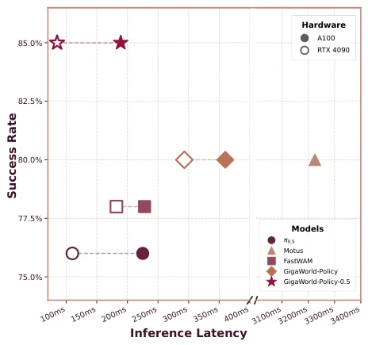
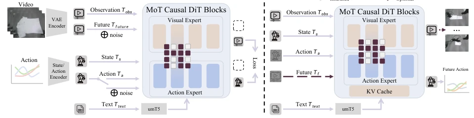
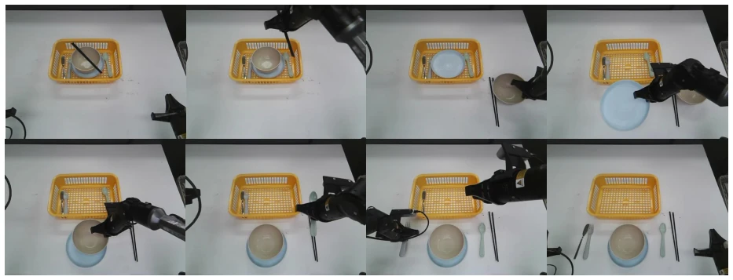
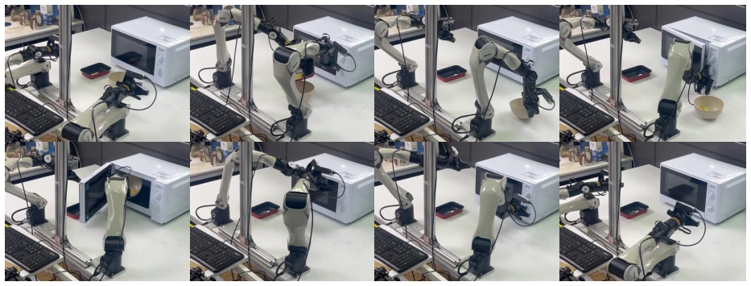
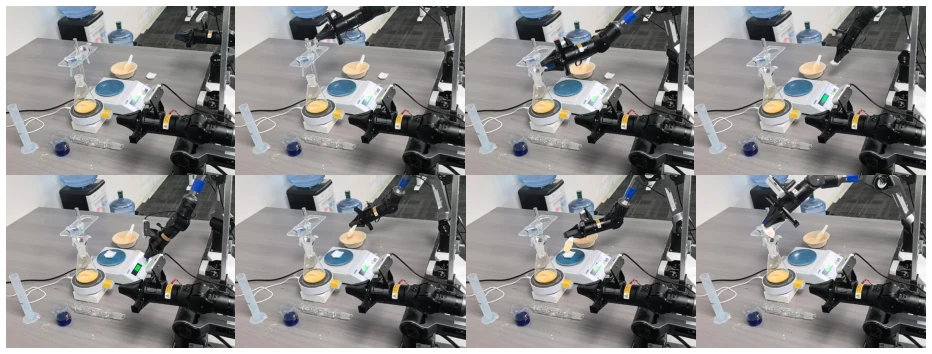
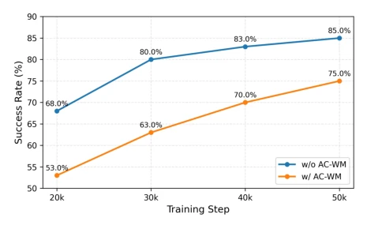
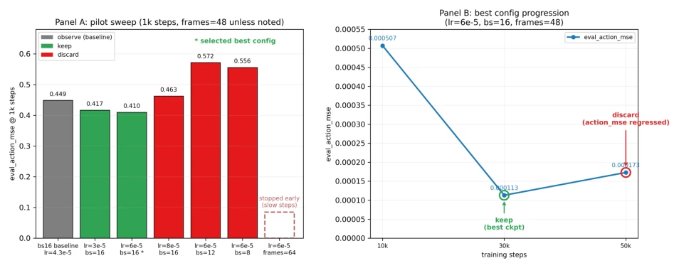

GigaWorld-Policy-0.5: A Faster and Stronger WAM Empowered by AutoResearch
GigaWorld Team, Angen Ye, Angyuan Ma, Boyuan Wang, Chaojun Ni, Fangzheng Ye abspdf
论文点评Review
这篇论文给 WAM 界又塞了一剂“快”药。GigaWorld-Policy-0.5 核心就一句话：训练时看未来视频，推理时闭眼输出动作。这招 GigaWorld-Policy [55] 早就玩过了，这次加了个 MoT 架构，把视觉和动作专家分开，推理时只算动作专家，确实省了算力。85ms 的延迟在 RTX 4090 上看着挺香，但“更强”有点虚，主要是 AutoResearch [18] 调参调出来的。不过能上 C++ 部署，说明作者想落地，不是纯刷榜。虽然号称 Faster and Stronger，但本质上还是工程优化的胜利。对于需要物理 grounding 的任务，这种解耦设计确实有效，但泛化能力是否真的提升还需更多验证。毕竟只是换了个专家网络，核心逻辑没变，属于在现有框架上的精修，而非范式转移。
This paper injects another dose of 'fast' medicine into the WAM community. The core of GigaWorld-Policy-0.5 is one sentence: watch future videos during training, output actions with eyes closed during inference. This trick GigaWorld-Policy [55] has played before; this time it adds a MoT architecture, separating visual and action experts, calculating only the action expert during inference, indeed saving compute. 85ms latency looks quite appealing on RTX 4090, but 'stronger' is a bit hollow, mainly tuned out by AutoResearch [18]. However, being able to deploy in C++ shows the authors want to land it, not just rank on benchmarks. Although claimed as Faster and Stronger, essentially it is still a victory of engineering optimization. For tasks requiring physical grounding, this decoupled design is indeed effective, but whether generalization capability truly improves needs more verification. After all, it is just changing an expert network, core logic unchanged, belongs to refinement on existing framework, not paradigm shift.
Existing WAMs like Motus [4] and FastWAM [57] need to generate future videos during inference, tokens are too expensive, latency is high, cannot achieve closed-loop control. VLA models like pi0.5 [15] are fast but lack dynamic priors of the physical world. Authors want to solve this contradiction: want both WAM's dense supervision and VLA's low latency. Video tokens are much more expensive than action tokens, VRAM and compute overhead is large, leading to poor real-time performance. Moreover, imagined future frame errors will accumulate, affecting long horizon tasks. Therefore, how to retain WAM's training advantages while avoiding expensive video generation during inference becomes a key challenge. Existing methods are either slow or lack physical grounding, urgently needing an efficient Action-Centered solution.

Figure 1: Comparison of GigaWorld-Policy-0.5 with baselines on inference frequency and success rate across hardware platforms in real-world settings.
Overall it is an Action-Centered framework. During training predict actions + future vision, during inference predict only actions. Architecture uses MoT, Visual Expert handles video, Action Expert handles actions, connected by causal mask in between, preventing future information leakage. Training divided into two stages: first pretrain Visual Expert using GigaWorld-1 [39], then fine-tune with mixed AC-WM and WAM policies. Inference optimization uses KV Cache and C++ runtime. Specifically, Visual Expert inherits GigaWorld-1 weights, Action Expert copies weights from Visual Expert. Uses Flow Matching [13] optimization, different timesteps for different modalities. Causal mask ensures actions do not depend on future vision, but future vision depends on actions. In pretraining stage, mix AC-WM and WAM training, let model learn how actions affect scene changes. During inference, cache vision and language context via KV Cache, avoid repeated calculation. C++ runtime integrates preprocessing and postprocessing, reduce Python overhead. This design enables low-latency closed-loop control even on edge devices.

Figure 2: Overview of GigaWorld-Policy-0.5, an MoT-based action-centered World Action Model. The model consists of a visual expert and an action expert: the visual expert specializes in processing video tokens, while the action expert focuses on action-token modeling. The two experts are connected through multi-modal self- attention, which follows the same causal masking strategy as GigaWorld-Policy [55] to preserve action-centered dependency modeling.
实验Experiments
在真实机器人上测了水果抓取、物体摆放和长 horizon 任务。基线包括 pi0.5 [15], Motus [4] 等。GigaWorld-Policy-0.5 在 fruit picking 上 SR 0.85，比 Motus 高 0.05。长 horizon 任务提升明显，从 0.57 到 0.77。消融实验证明 MoT 架构降低了延迟，AC-WM 混合训练提升了性能。AutoResearch 自动搜到了最佳学习率。具体在 Food Heating 任务上达到 0.80，比 Motus 高 0.20。在 Tableware Arrangement 任务上达到 0.80。推理延迟在 RTX 4090 上为 85ms，比 FastWAM 快 53%。实验表明，该方法在保持物理一致性的同时，显著提升了部署效率。
Tested on real robots for fruit picking, object placement, and long horizon tasks. Baselines include pi0.5 [15], Motus [4], etc. GigaWorld-Policy-0.5 SR 0.85 on fruit picking, 0.05 higher than Motus. Long horizon task improvement obvious, from 0.57 to 0.77. Ablation studies prove MoT architecture reduced latency, AC-WM mixed training improved performance. AutoResearch automatically searched for best learning rate. Specifically on Food Heating task reached 0.80, 0.20 higher than Motus. Reached 0.80 on Tableware Arrangement task. Inference latency on RTX 4090 is 85ms, 53% faster than FastWAM. Experiments show, this method while maintaining physical consistency, significantly improved deployment efficiency.

Figure 3: Real-world demonstration of GigaWorld-Policy-0.5 on the Tableware Arrangement task.

Figure 4: Real-world demonstration of GigaWorld-Policy-0.5 on the Food Heating task.

Figure 5: Real-world demonstration of GigaWorld-Policy-0.5 on the Solid Weighing task.

Figure 6: Success rates at different training steps in the AC-WM ablation study. rates, and ultimately reaches a success rate of 0.85. Notably, strong performance emerges at substantially earlier training steps, indicating that explicitly modeling how robot actions drive visual state transitions yields more transferable action representations. As a result, downstream policy learning becomes more sample-efficient, requiring fewer post-training updates to achieve competitive closed-loop control performance.

Figure 7: AutoResearch hyperparameter search and training progression on the pick the fruit task. Left: 1K-step pilot sweep over learning rate and batch-size configurations, where green bars indicate retained candidates and red bars indicate discarded configurations. Right: extended training progression under the selected configuration, showing that the model achieves the best validation action MSE at 30K steps.